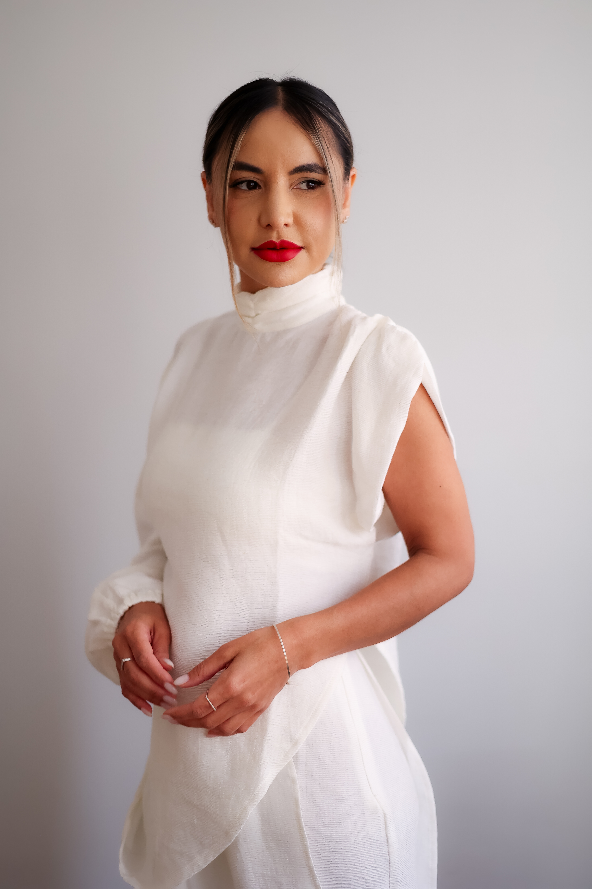
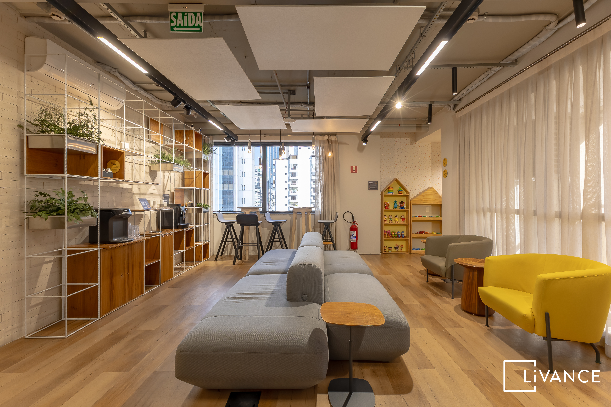

Harmonização Facial no Itaim Bibi com Naturalidade, Propósito e Elegância.
“Realço sua beleza, sem transformar quem você é.” Atendimento exclusivo com a Dra. Valquíria Meira, Biomédica Especialista e Professora de Pós-Graduação em Estética.
Dra. Valquíria Meira
Foto Principal • Hero
Inserir arquivo: dra-val.webpNaturalidade & Precisão
Respeito à sua anatomia única
Protocolos & Procedimentos
Procedimentos pensados para a sua anatomia.
Imagens ilustrativas / divulgação autorizada em TCLE. Não representa garantia de resultado; cada ser humano possui características anatômicas únicas.
Selecione um protocolo para explorar e agendar:

Dra. Valquíria Meira
Foto Editorial • Seção Sobre
Inserir arquivo: dra-val-sobre.webpSobre a Dra. Valquíria Meira
Autoridade acadêmica, olhar artístico e respeito à sua identidade.
A Dra. Valquíria Campos Meira é Biomédica Especialista e Habilitada em Estética (CRBM 36253), reconhecida por sua atuação pautada em segurança anatômica, atendimento humanizado e resultados extremamente naturais.
Além da prática clínica exclusiva no Itaim Bibi, compartilha sua expertise na formação de novos especialistas — unindo ciência atualizada, sensibilidade estética e técnica refinada para realçar traços sem exageros.
Biomédica Especialista
Habilitada em Estética (CRBM 36253) com rigor técnico e ético.
Professora de Pós-Graduação
Docente em Estética Avançada formando profissionais de excelência.
Ministra Cursos de HOF
Referência prática em técnicas modernas de Harmonização Facial.
Monitora Internacional
Atualização contínua em protocolos globais e anatomia aplicada.

Consultório Itaim Bibi
Rua Joaquim Floriano, 413 • 9º Andar
Inserir arquivo: consultorio-itaim.webpExperiência no Consultório
Um ambiente acolhedor, exclusivo e sem pressa.
1ª Consulta de Avaliação de 1 Hora
Atendimento dedicado e sem pressa para análise anatômica completa, escuta das suas expectativas e criação de um plano personalizado.
Sala de Espera Acolhedora
Conforto pensado nos mínimos detalhes com café fresquinho, Wi-Fi de alta velocidade e honest market à sua disposição.
Alto Padrão no Itaim Bibi com Valet
Prédio comercial moderno na Rua Joaquim Floriano, 413 — 9º andar, com estacionamento valet no local para sua total comodidade.
Transparência & Segurança
Dúvidas Frequentes
Agendamento Exclusivo
Pronto(a) para realçar a sua melhor versão?
Agende sua avaliação personalizada e descubra como a harmonização sutil pode valorizar seus traços com segurança e naturalidade.